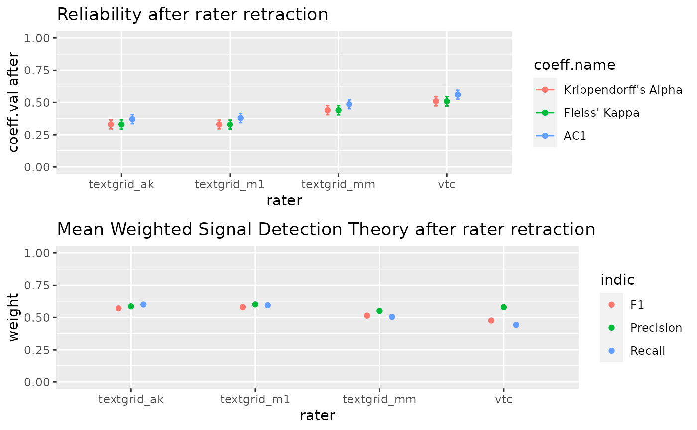

Compare a rater from a raterData class and provide indication of quality for each annotator. In classical test theory tested annotator is retracted from the data and reliabily indicator are provided. A good annotator should should decrase the indicator after retraction. In signal detection theory a mean of precision, recal and F-score are provided by rater.
compareRating(raterData)
| raterData | : a raterData class |
|---|
Soon
#> ############################################### #> Hello Wellcome to the ChildRecordings R Project #> #> Your ChildRecording project path contained : #> 1720 annotations files #> 1720 are referenced in the metadata #> 5 coders were found : textgrid_m1 vtc textgrid_mm textgrid_ak textgrid_ac #> All files seems to be present and referenced in the metadata (good news ;) ) #> #> 379 metadata don't have a start recording time (a.k.a start.time) #> therefore time indicators will not be built for those files #> more infos in ChildRecordings$integrity_test$missing.start.time #> 362 files are empty #> This should normally mean that no annotation were provided by annotator #> more infos in ChildRecordings$integrity_test$empty.files# if no time windows is specified, this function will only return at table for all the know raters # All the rater need to ratter any segment find search = find.rating.segment(CR, "aiku/namibie_aiku_20160715_1.wav") rez = aggregateRating(search, CR, cut=0.100, verbose=T)#> |================== | 25% time by step : 0s estimate duration : 0m remain : 0m #> |===================================== | 50% time by step : 0s estimate duration : 0m remain : 0m #> |======================================================== | 75% time by step : 0s estimate duration : 0m remain : 0m #> |==========================================================================|100% time by step : 0s estimate duration : 0m remain : 0m #> number of annotators 4 #> Sum of reccording annotation 240 seconds or 0.06666667 hours #> Reccord lenght by annotator 60 seconds or 0.01666667 hours #>comparaison = compareRating(rez)#> number of annotators 4 #> length of reccording annotation 240 seconds or 0.06666667 hours #> Record span 60 seconds or 0.01666667 hours #> #> ### Annotator textgrid_ak ### #> #> coeff.val before conf.int before coeff.val after #> Krippendorff's Alpha 0.402 (0.373,0.432) 0.330 #> Fleiss' Kappa 0.402 (0.372,0.432) 0.330 #> AC1 0.449 (0.419,0.479) 0.371 #> conf.int after coeff.difference #> Krippendorff's Alpha (0.296,0.365) 0.072 #> Fleiss' Kappa (0.295,0.365) 0.072 #> AC1 (0.336,0.406) 0.078 #> #> unweight weight #> Recall 0.516 0.599 #> Precision 0.543 0.585 #> F1 0.505 0.569 #> #> ### Annotator textgrid_m1 ### #> #> coeff.val before conf.int before coeff.val after #> Krippendorff's Alpha 0.402 (0.373,0.432) 0.33 #> Fleiss' Kappa 0.402 (0.372,0.432) 0.33 #> AC1 0.449 (0.419,0.479) 0.38 #> conf.int after coeff.difference #> Krippendorff's Alpha (0.296,0.364) 0.072 #> Fleiss' Kappa (0.295,0.364) 0.072 #> AC1 (0.344,0.415) 0.069 #> #> unweight weight #> Recall 0.590 0.593 #> Precision 0.540 0.600 #> F1 0.538 0.579 #> #> ### Annotator textgrid_mm ### #> #> coeff.val before conf.int before coeff.val after #> Krippendorff's Alpha 0.402 (0.373,0.432) 0.440 #> Fleiss' Kappa 0.402 (0.372,0.432) 0.439 #> AC1 0.449 (0.419,0.479) 0.485 #> conf.int after coeff.difference #> Krippendorff's Alpha (0.405,0.475) -0.037 #> Fleiss' Kappa (0.404,0.474) -0.037 #> AC1 (0.451,0.52) -0.036 #> #> unweight weight #> Recall 0.420 0.504 #> Precision 0.440 0.550 #> F1 0.414 0.514 #> #> ### Annotator vtc ### #> #> coeff.val before conf.int before coeff.val after #> Krippendorff's Alpha 0.402 (0.373,0.432) 0.509 #> Fleiss' Kappa 0.402 (0.372,0.432) 0.508 #> AC1 0.449 (0.419,0.479) 0.560 #> conf.int after coeff.difference #> Krippendorff's Alpha (0.473,0.545) -0.106 #> Fleiss' Kappa (0.472,0.545) -0.106 #> AC1 (0.525,0.594) -0.111 #> #> unweight weight #> Recall 0.441 0.443 #> Precision 0.444 0.579 #> F1 0.401 0.476 #>